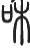

学习中医很容易偏离正轨而不自知，因此需要不停地回头检视自己。中医是“道”与“术”的结合，两者缺一不可，我们必须时刻从“道”与“术”两方面检视自己的成长，看看自己的医理是不是偏离了经典的“道”，是不是过分地延伸了经典的意思，是不是加入了个人的主观思想。同时我们还要不断地客观评价自己的医术，看自己的处方是否完全遵从医理，处方思路是否清晰，是否可以精确把握病人状态。因此大家一定要一面多读经典以体于“道”，同时还要多临床以精于“术”。这一章我们是要更具体地讨论“天地之道”在“术”的层面上的应用。让我们舍弃以前的治病经验，跟随张仲景一起踏上经典之路。
有些人每天学习经典，甚至能够长篇背诵，逢人便背诵一段以炫耀自己的功力。他们将《伤寒论》中每个方剂所对应的条文背诵得一字不差，但在临床看病时却只对症开方，一看到口苦、咽干、目眩，就开小柴胡汤；看到手足冷就开当归四逆汤。他们认为只要开的是经方就是中医高手，只会开后世方的都是入门水平。
其实善于思考的医生很容易发现，如果病人主诉口苦、咽干、目眩，小柴胡汤未必每次都有效，只会有一部分会产生“一剂知，数剂已”的特效。我们不能因为这一两个特效的医案，便认为小柴胡汤就是好，并迫不及待地与别人分享这一特效病例。如果这样只会越来越浮躁，这样读经典只是为了得到更多特效方剂的“小巧”，方向错了会失去深入经典的可能。深入经典的前提必须是心静，体会经典中所载的天地之道，不去关注哪一个“小巧”高哪一个“小巧”低，放下所有的“小巧”学习经典。
孟子曰：“梓匠轮舆能与人规矩，不能使人巧。”不管是金元四大家的医书还是经典医书，所教人的都不是治病的诀窍，而是天地之道，学会治病的前提是必须要掌握这个“道”。由于对“道”的切入点不同从而产生了不同的中医门派。我认为中医必须有扎实的基本功，不是指可以背诵多少经典文字、掌握多少方剂或针灸手法，也不是要看过多少中医书，真正的基本功是你的思维离经典思维有多远，你的体悟离天地之道有多远。
我倡导大家每天漫无目的地阅读经典，其实就是要大家放下自己所有知见，去体会经典所言的“天地之道”，用经典的思维化掉以前所有的知见，与经典合一。我们不仅要知道经典讲的内容，了解天地之道，更重要的是掌握古人的这种思维方式，并通过临床不断强化这种思维。临床选方用药不再想这些症状应该用什么方治疗，而是要判断这个人阴阳到底偏离到什么状态，应该用什么方法让他恢复到阴阳匀平的状态。治的不再是病，而是在调理人体。人得病不是因为增加了什么病理因素，而是因为暂时偏离了正常状态，找不到回归健康的路，医生要做的就是选一种方法使身体重新达到阴平阳秘的状态。
治病是痛苦的，因为疾病千奇百怪，我们即使掌握再多的方剂也没办法应对所有的疾病。但调整人体状态是快乐的，因为无论这个人的状态再怎么变化，也逃不过阴阳五行。以这种心态临床应诊，我们不会对着奇怪的病发愁，或者因偶然出现某一特效病例而狂喜，有的只是将一个个偏离阴阳匀平的状态引导到匀平状态，临床上大量的病人都是特效的，也就没有偶尔产生特效的狂喜了，有的只是看到一个个病人回到平和，自己内心恬淡的喜悦而已。
现在主流思想认为，风与寒是一种名字叫作“风”和“寒”的外在邪气，此物游行于天地之间，趁人虚弱之时便进入人体，潜藏在经络或脏腑里，引发人体各种不适，如果不能用药把邪气祛除，病就不会好。那么我就想问：天地之间的寒气与风气从何而来？要搞明白这个问题我们必须明白天地的深层道理。《内经》云：“天有四时五行，以生长收藏，以生寒暑燥湿风。”结合上下文很容易理解“风”与“寒”从何而来。天地之间只有一个气，气的不同状态便化现出寒、暑、燥、湿、风。具体而言，当天地之气处于“生”的状态，天地之间便会表现出“风”的象，这种“风”的象就像木一样，因此可以说这种状态或外象就是木，同样当天地之气处于藏的状态，天地之间就会表现出“寒”的象。可以说四时五行为体，生长收藏、寒暑燥湿风为用。天地之间的寒、暑、燥、湿、风为一气所化现的五种象，天地之间每时每刻都可以察觉到这五种象，只是春季风象最明显，我们就说春生风；冬季寒象明显，我们就说冬生寒。
“人以天地之气生，四时之法成”，人生于天地之间，人体之气亦会受天地之气的影响化现出四时寒、暑、燥、湿、风的象（其实人体之气与天地之气为同一气，为了说理暂分为二）。寒象为“气藏”所显现出来的象，当人穿较少衣服与寒冷的外界接触时，寒冷的外象便会引起人体产生拘紧的寒象，人便会不由自主地全身拘紧、打哆嗦，说明这个人能够适应天地变化，为天人合一，这种表现不是得病。当外界过冷引起人体之气过度拘紧，或外界已温暖但人体还一直处于拘紧状态，他所表现的就不仅仅是打个哆嗦了，还会表现出气拘紧不通的身体疼痛、无汗、恶寒、喜温等，此寒便不再是六气而是六淫之寒邪，此人当下便处于中寒状态。同样道理，当人穿衣较少与风大的外界接触，体表不停地被风吹，增加了汗液的蒸发，引起人体之气一直处于疏泄的风象，此时为不病。但当外界风引起气疏泄过度，或外界已无风而人体还一直处于疏泄状态，便会表现出汗出、麻木、走窜痛等不适，此风便为六淫之风邪，此人当下便处于中风的状态。
每一种邪气致病所表现出的外象在《内经》里都有详细论述，建议读者仔细研读《内经》相关篇章，体会每一种邪气状态，在临床便可以清楚地分辨出病人的表现究竟是哪一邪气的象。
临床诊脉，我们可以通过手指的举按之间判断病人是中风还是中寒。具体操作方法为：手指由轻到重向下按，在向下按的过程指下感觉是脉搏力度由弱到强再到弱，记住这个过程中最强脉的力度。手指按至骨后再轻轻地向上抬，在抬指过程中指下感觉是脉搏力度由弱到强再到弱，记住这个过程中的最强脉的力度。下按得到的最强脉力与上举得到的最强脉力比较，如果两个力量一致，分不出强弱，说明病人当下处于既非中风也非中寒的中和状态，不病，或病与中风中寒无关；如果下按力大，说明病人的脉搏是紧张的，病人的气处于拘紧状态，为中寒；如果上举力大，说明病人的脉搏是向外舒张的，病人的气处于疏泄状态，为中风。
中风、中寒及其他邪气，皆可以相兼于六经病出现，我们在诊断出六经大象之后还要继续细分六经所兼杂的邪气。纵观《伤寒论》全文，并无“中风寒”一说，张仲景将中风与中寒分得很清楚。
“太阳病，发热，汗出，恶风，脉缓者，名为中风。
“太阳病，或已发热，或未发热，必恶寒，体痛，呕逆，脉阴阳俱紧者，名为伤寒。
“阳明病，若能食，名中风，不能食，名中寒。”
病人如果表现是中风象那么就不可能再是中寒象，因为中风和中寒正好是两个相反的象，人体之气不可能处在截然相反的两个状态，中风为人体气处于疏泄状态，而中寒为拘紧状态。中风的状态可以和中湿的状态相兼，中寒亦可与中湿相兼。当病人处于中风状态，我们只要用药或用针调整使其由中风状态转变到刚刚中寒状态便可痊愈。在脉诊体现上，如果病人脉为外散舒张的中风脉，只要将脉调治到轻度向内拘紧的中寒脉，而且整体脉趋于中和，寸、关、尺大小亦齐等，就算还有一点症状没消除，但病的大势已去，即使停药症状也可自行消除，病就治愈了。反之，本来处在中风状态，治疗后脉比以前更舒张、更没力，病人的症状一般会加重，或会增加新的症状，这就说明治错了，为逆治。同理，如果病人处于中寒状态，只要调治到刚刚中风状态便可痊愈。病人如果不是阳明病、太阴病，脉象显现中寒的紧象，却表现为汗大出等疏泄的中风象，那么这个病人为亡阳，我曾经遇到过一例癌症晚期的病人就是如此表现，他很快就去世了。
现在有些人体内根本没有寒象，却听从错误的医学理论，服用麻黄、细辛、桂枝、附子等温散药，或者每天喝姜枣茶以驱散寒气，使人体正常的气总是处于向外疏散的状态，久之就会表现出怕冷、冒冷风等迹象，实际这是人体通过怕冷等迹象使气收引。庸医不知，以为是在排寒气，认为药物有效，就继续用大剂温散药，使病人越来越虚，很多症状便没有力量再表现出来了，貌似得以治愈，实则为一种假象。这时再对比看治疗前后的人，原先人体之气较充足，敢喝冷水，敢跑步，吃肉也能运化；而治疗后呢，沾点冷水就拉肚子，出点汗就受寒，吃点肉就上火，三天两头就要去医院，此时的脉象往往一点胃气都没有。我在临床每见这种病人，未尝不痛心疾首，正是“庸医杀人不用刀”。学者慎之！慎之！
如果读者能够体会到每一经病所反映的天地、人体的象，那就继续沿着张仲景所指引的方向深入学习。
六经病本没有始终，六经之间的传变也不是僵化固定的，一切都很灵活，我们很难用语言描述。每一种病都有六经传变的规律，有的传变快，有的传变慢，用再长的篇幅也不能一一描述。在所有的疾病中，感冒伤寒传变较快，且最为常见，因此张仲景便以伤寒为例，说明这六经的产生与传变规律。只要掌握了这个六经的规律，我们不仅可以将之用于治疗伤寒病，内、外、妇、儿各科疾病都可以用。掌握了这个规律后，医生可以把握病人当下的状态，知道病情可能会往哪个状态传变，现在的病是重是轻，传变到什么时候这个病人就没救了，在什么诱因下更有可能传变等，可以对病情了如指掌。下面就以感冒伤寒为例说明这个规律。
正常人，阴阳平衡，脉象左右手六部脉大小齐等，关前一分左右手大小齐等，说明阴阳匀平，不病。
下面以感受寒邪为例。
“伤寒一日，太阳受之”。寒气来袭，就是人体的气感受到天地收藏的气，人体的气开始收藏，阳气内入增多，汗孔闭，阴气外出受阻，人体短时间处于太阳状态，表现为发热恶寒、身痛等症状，此时病人脉象为人迎二盛。“脉若静者为不传”，如果得了太阳病，但脉很安静，第一说明病人没有强烈的阴阳相争之象，人体之气较静，病势缓，病人主观感觉不重，不发热或微发热，或有乏力、身痛等症状；第二说明病人如果顺应身体静心休养，不使气躁动起来，病就不会传变，过半日或一日汗孔慢慢打开，阳气内入慢慢减少，阴阳就可以恢复平衡，人体就可以恢复健康。
“伤寒二日，阳明受之”。太阳病，阳气初占上风，如果病人内里的阴气不安静，脉象躁动，阴气（气外出为阴气）早晚会胜过阳气的内入，冲破阳入的束缚。人体便由阳盛变成阴盛，表现出气大量外出的阳明病，其表现为汗孔打开，汗大泄，郁闭的热气大量外出，此时脉象为人迎三盛。“阴平阳秘，精神乃治”，是不是传变很重要的因素是阴能否平静下来，只要阴不安静，必然要传变。传变到阳明病，气大量外出，这时如果能把心静下来，气外出会慢慢减少，同时吃食物补充大量的谷气，这样虽然消耗多但是有了及时的补给，慢慢地人体又会恢复到阴平阳秘的匀平状态。一般情况下，外感病传到阳明就很难继续往下传变了，因为“阳明居中主土也，万物所归，无所复传”。只要胃口好，就能很长时间处于阳明病而不传变，所以古人又说“阳明多气多血”，很耐折腾。
“伤寒三日，少阳受之”。太阳病，阳气内入多，表闭，二日未传到阳明，虽然阴气很躁动，很想外出，但是因为体质本弱，或是食物供给不足等，人体阴气弱，无力攻破阳气的束缚，如此僵持到第三日或第六七日，人体一直处于阳盛的状态，气内入多于外出，人体阴阳气在相持中都减少，病人便处于少阳病，由全身热传变到只有内热。此时只要静下心使气平下来，并补充足够的谷气，慢慢也会缓解而恢复阴阳匀平。
此为感受寒邪后三阳病的传变规律，感受风邪的传变规律与寒邪相同。人体感受风邪之后，导致人体的汗孔开合不利，大量的汗孔处于开泄状态，气血会因为汗孔的开放趋于肌表，此时人体短时间处于太阳状态。随着气血大量涌向肌表并向外消耗，人体气血就会处于相对的外热内寒的阳明状态，即二日阳明。如果人体气血衰少，即使汗孔开泻人体气血也无力消耗，大约三日左右便传到少阳状态。正常的平人感受寒邪或风邪都会以此规律传变，但是由于人体的体质不同，如有些人不病的时候就长期处于气血亢盛的阳明状态，这类人感受风寒后有可能只经历极短时间的太阳病就迅速传到阳明了。
温邪的传变与风寒的传变有差异，温病由口鼻而入，往往一受邪就迅速传到大热、大渴、大汗的阳明状态，并迅速耗伤人体的津液。我们学习《伤寒论》不能机械地通过天数来判断病人当下的状态，也不能一见外感总想着发汗，还需要观其脉证，随证治之。
大部分外感病只要不被误治，很难传到三阴病，很多危重病都是因为误治而引发的。受生于大自然并在大自然中长期生存，人体有较完善的自愈机制，而自愈的关键是阴气平，就是一定要静心，使心不着于外物，心不着于物则明，主明则下安，主不明则十二官危。因此要求医生在看病的时候，一方面自己的心不能乱，以便于准确体察出病人的阴阳倾移变化；另一方面，告诉病人不要慌乱，安心服药，慌乱只会加速病情传变而使病情恶化。
如果三阳病未能自愈，或得不到及时治疗，或一直被误治，就要传到三阴病。一般的传变顺序为：阳明病气大量外耗，得不到及时补充，长期下去体内的气就会由实转虚，全身发热转变为只有手足温，并且伴随内里虚的腹痛、腹满等症状，此时便传到了太阴病，脉象则是气口三盛。李东垣描述这个传变过程为“初为热中，后必为寒中”。如果继续得不到治疗，一直消耗到气血由“太”变“少”，全身的气都变少，不足以温养全身，此时便表现手足寒、全身冷等症状，便到了少阴状态，脉象则是气口两盛。继续不治疗，阴气外耗慢慢减慢，手足越来越寒，反倒使内里产生生机，内里开始变热，形成外寒内热之象，此时便是厥阴，脉象为气口一盛。厥阴病是个关键，如果内里的气积攒起来，慢慢能够温养外边的厥逆，便传到少阳或少阴，则为顺；如果内里的气没有积攒起来，继续虚下去就很有可能为除中。
每一经病都代表着一种状态，每一种状态都是不稳定的，有时会发展到阴阳平和，有时却会阴阳相争剧烈。我们治疗的目的是顺应人体的不同状态，引导其向好的方向发展。每一经病都有一个治疗大法，掌握这个大法，对该经病的治疗有指导作用，在严格的法度指导下才不会治逆而使病情恶化。并且在这些法度的指导下可以指导病人选择正确的、适合的养生方法。
《脉经》收录的张仲景条文中，大法都是放在章节的第一条，可见大法的重要性。“大法：春夏宜发汗。”“大法：春宜吐。”“大法：秋宜下。”“大法：冬宜服温热药及灸。”每一种状态都必须以大法为指导选方治疗，春夏即太阳病、少阳病，治疗大法为发汗法；秋即太阴病，治疗大法为下法；冬即少阴病，治疗大法为温法。关于春宜吐，似乎不合常理，笔者考虑可能是衍文，古字“吐”（ ）与“和”（ ）很相似，有可能是春宜和，即少阳病的治疗大法当是和法。具体每一经病的详细治法请看下文。
太阳病，为阴阳俱盛，以阳盛为主，因此治疗太阳病的思路应该是泻阳泻阴，以泻阳为主，能达到这个效果的治法就是汗法或利小便。对于脉象比较躁动，寸脉强度大于尺脉（寸脉大小不一定大于尺脉，但脉搏的力度寸脉必须大于尺脉），表现也比较亢盛的病人，我们可以选择发汗的方法，方如桂枝汤、麻黄汤、小青龙汤、大青龙汤等方加减；对于脉象比较迟缓，寸脉与尺脉力度差不多，表现也比较沉静的病人，我们可以选择利小便的方法，选方如苓桂术甘汤、茯苓甘草汤、五苓散、真武汤等。具体选方要根据病人的脉象和表现，详细观察病人的气是拘紧还是疏泄，是滑利还是黏涩，病位的浮、中、沉，气是否有郁滞，胃气强弱，是否有被误治等，要综合分析，精确选方。只要选方的大法正确，就可以引领病人的病情向好的方向发展。在大法的指导下更进一步地精确选方是达到精准疗效的关键。
阳明病，“两阳合明”，阴阳俱盛，以阴盛为主，阳亦很盛。因此治疗阳明病的思路为泻阴泻阳，以泻阴为主，能达到这个效果的治疗大法就是下法。拉肚子不是目的，目的是通过下法使亢盛的阴阳气匀平，根据具体病情可以选择三承气汤、芍药甘草汤、黄芩汤、麻子仁丸等。无论是汗法还是下法，治疗都需要中病即止，达到目的后必须停药，过用会使人体变虚而发生传变。用药亦不可过于杂乱，拖泥带水使下不彻底或下起来没完，反倒不利于恢复。用药亦不可过量，以微下为度，过汗、过下都会引起疾病传变。
少阳病，阴阳俱少，阴少于阳，阳相对盛，病以阴虚为主。阴阳都少任何一个也不能泻，因此治疗少阳病的思路为益阴。益与补不同，补的原意为衣服上打补丁，收住气使气不外散则为补；益的原意为水满之后外溢，让气慢慢多起来向外满溢是为益，达到这个效果的治法就是和法，通过和法，祛除气的郁滞，使气慢慢满溢，最后达到阴气慢慢满溢出来而表现蒸蒸汗出而愈。也可以说少阳病的大法为不汗而汗。代表方剂便是小柴胡汤、柴胡桂枝汤、大柴胡汤。需要说明的是小柴胡汤的加减极其微妙，必须仔细体会每种加减法所反映的细节差异。从文献上看大柴胡汤没有大黄，因为有了大黄则成了地地道道的下法，大柴胡汤只是下气，使郁滞的气快速疏通，而非下实。
太阴病，阴阳俱盛，以阴盛为主。太阴病与阳明病相似，只是太阴病阳已不是很盛，内里亦开始变虚，此时如果用下法，则会使内里更虚，反而会加重病情，因此太阴病的治法为泻阴而护阳，具体的治疗大法是使气向内运行而不致泻下，亦属于下法的一种。阳明病的下法为直接苦下，而太阴病的下法则要辛苦合用，以苦为主，最后人体达到由阴道虚的状态变为阳道实的状态便可痊愈。在治疗过程中即使病人表现出暴烦下利，日十余行的症状，只要是用调整“气”方向的方法，而非下法达到的，下利必然会自己止住，因为这是用不下而下让气向内行的方法使脾家实的结果。根据脉象虚实等细节选方，代表方剂为桂枝加芍药汤、小建中汤等。
少阴病，阴阳俱虚，阴多于阳，以阳虚为主，此时的治疗目的是使阴阳气尽快长起来，此时人体气已经很少，手足亦寒，如果用收敛的方法已无气可收，因此治疗的方法为温法，通过温法使气快速运转起来，达到阳生阴长的目的。温法以徐徐温中为要，一定要注意不可过温使脉暴出而亡阳，亦不可过温使出汗，即使有表证也只可微出汗，表解后继续温里。汗法是少阴病的大逆之法，因为少阴病气本就少，用汗法很容易亡阴伤阳使病情极度恶化而危及生命，切不可强责少阴汗。我在临床经常看到医生对少阴病人处大剂量的麻黄附子细辛汤，久服的后果很容易使病人极虚，一定要谨慎用之。根据具体情况，少阴病常用方为四逆汤、真武汤、附子汤、白通汤等。如果病人处于少阴，非常烦躁，气大量外出，少阴本虚，而气又大量外出，必须以收住外散之气为第一，然后方可用温法。这种情况下脉象往往是少阴脉同时脉躁实不安，此时必须急下，且需用峻药只下一次，待气静后再观其脉证治疗。下之用大承气汤，温里用四逆汤、理中汤等。
厥阴病，阴阳俱虚，阳开始相对多于阴，以阴虚为主，为外寒内热，因为气血很少，所以内热不可以再有损伤，治疗的目的是使这点内热散开去温养外寒，因此治疗的方法为通法，就是用具有走窜性质的药使体内之气流通，以通达四肢。需要注意的是在用通法时一定要护住这一点内热之气，不可只为通四肢而损伤内里的气，如果气较虚可以用酸敛的药敛住气再温通。根据具体情况，厥阴病常用方为乌梅丸、当归四逆汤、吴茱萸汤、通脉四逆汤等。
总之，太阳病的治疗大法为发汗、利小便；阳明病的治疗大法为下；少阳病的治疗大法为不汗而汗，为和法；太阴病的治疗大法为不下而下；少阴病的治疗大法为温；厥阴病的治疗大法为通。无论哪一经病的治疗方法，都有两个应用前提，一是病人能吃饭以产生谷气，二是病人要静心宁神以复神气。有了充足的谷气才能更好地调整状态，充足的粮草是调动兵马的前提；神不外骋，恬淡其心，则邪无从深入，治疗可事半功倍。除极个别情况外一定要时时护住胃气，同时根据病人的具体情况嘱咐病人别生气或别过劳等。治人为本，治病为辅。
不管哪一经病，如果采用了正确的治法就会使病人康复，用错误的治法就会使病情恶化。很多人说一定要记住某某方剂的禁忌证，其实只要不是适应证都是禁忌证，我们在使用经方时一定要谨记。治疗误治的第一大法为“观其脉证，知犯何逆，随证治之”，只要我们能谨熟阴阳，无论病情传变到多么复杂的状态，还是逃不出六经病。熟练掌握六经病，就可随证选方治疗。
太阳病，无论是中风还是伤寒，治疗大法为汗法或利小便法。误治不可胜数，较常见的误治为以下几种。
“脉迟涩不可发汗”，因为“荣气不足，血少故也”，如果此时选汗法只是小逆，病人气血会更虚，而表现出寒栗、头眩欲仆等症，此时只要选温化之法补救便可。
“尺脉弱不可发汗”，尺脉反映内里的状态，尺脉弱说明里虚，病人往往表现咽喉干燥、腹痛等症，发汗会使尺更虚，若发汗后不再是太阳病，则按所传到之经治疗。发汗后若病未传变仍当解表，需根据尺脉情况或者先用甘药将尺脉填足，待其自汗而解，根据整体虚实选方如甘草干姜汤、桂枝甘草汤、四逆汤等；或是用甘味药为君顾护里虚，少用解表药解表，选方如桂枝加葛根汤、葛根汤等。
“冬三月不可发汗”，发汗的前提是病人必须温覆暖衣，如果外环境为如冬三月的寒，人体之气必然拘紧，此时不可强发汗，发汗必不解反伤正气，使病情恶化。正确的治法为先嘱病人温覆以去寒就温，再发汗，待汗出半日许便可。
“疮家不可发汗”，身上长疮或肺中有腥脓痰等，会出现脉紧，症状上甚至出现身疼痛，很容易误诊为太阳中寒证而发汗，此时发汗一定是逆。表不解会引起脉紧，疮脓不消也会引起脉紧，此时若发汗解开紧脉，但因疮脓未消，脉必会复紧以消疮脓，此时疮脓定会较前恶化。化疮脓可选千金苇茎汤、四妙勇安汤等。
伤寒脉浮紧，本当用麻黄汤发汗，反用桂枝汤，则脉会躁动不安，病人亦会表现出表不解和烦躁的症状，此时不可再解表，因为内气已经很躁动了，一旦解表，内里郁滞之气定会如洪水决堤，不可收拾，发汗的同时需要凝气，可用大青龙汤发之。
伤寒脉浮缓，本当用桂枝汤发汗，反用麻黄汤，发汗之后病人表会更虚，脉也会更虚缓，如果未传变可继续用桂枝汤发汗，若过虚缓可用桂枝二越婢一汤，若传变则需观其脉证治疗。太阳病不可用温针、丸药等强发汗，或者用药剂量过大而致汗出如水流漓，这样病必不除。虽然热短时间会随汗解，过一会儿必会复发高热，此时便是阳明病，要根据阳明病论治。发汗不彻是指发汗过程中没有去寒就温又感受风寒，或者发汗药药力太轻未至遍身微似有汗，此时病人症状未全缓解，可复发汗，选用桂枝汤、桂枝麻黄各半汤、桂枝加葛根汤等。
太阳病阳盛以汗解为顺，反用下法则是大逆，其病变万千。
先说太阳中寒误下：①病本是表实，气内入太过，外出不及，表闭，如果用了下法而病人体质较好，病未传变，则仍可汗解。②用了下法之后，使得表闭更深入，但仍有表闭证，表现出头项强痛、鼻塞等症状，同时表现出内里虚弱的症状，如咽干痛、呕等。脉象特点为寸脉强、尺脉弱，病在阳。因为用了下法之后使得关尺脉变虚，此时单从脉象看往往是阳明病，但这个阳明脉所反映的不是真正的阳明病，而是用了下法之后的关尺脉虚，相对而言关前一分反倒盛，脉象成阳明象，但从症状上看是太阳病，此时便是太阳阳明合病。“太阳与阳明合病者，必自下利，葛根汤主之。”这种太阳阳明合病必然源于下利，临床上我们可以断定这个病人是被苦寒清下之药误治的。寸脉力强说明表未解，当从表解，但里已虚，根据里虚与表实的轻重情况选择葛根汤、麻子仁丸、甘草汤等。③如果用了下法，表闭更进一步深入，由表闭深入到里闭，为阳气内陷，由于表闭已深入，没有表证，或仅有项背强一点表证，内里闭塞则会表现出胸脘拒痛、咳嗽等结胸证。此时的脉象特点为寸脉已不是很实，关前一分非常结实，甚至可以摸到一个很实的结，关尺脉也较结实，但程度不及关前一分。寸为心肺、关为肝脾，此最实点位于寸关之间，为心下，此时必须赶紧治疗，寸已不实，不能从表解，只能用药下掉这些壅结的痰饮，可以选各陷胸汤、陷胸丸。临床上很多高血压、高血糖较重的病人很容易出现此象，此时必须赶紧下痰饮，否则很容易中风。如果表不解，心下有痰饮，可以用小青龙汤；如果结胸位置比较靠上，在寸脉结，但没有表证，可以用吐法。④如果过用苦寒下法或在用苦寒药时正逢女子经期，则很容易使气结于下焦、膀胱等处，呈现蓄血证，脉象特点为寸、关脉都虚，只有尺脉结实，而且往往很结实，此时可用下瘀血的方剂，如桃核承气汤、抵挡汤、抵挡丸、桂枝茯苓丸等。⑤如果用了下法之后传到别经，则还是观其脉证，随证治之。
太阳中风误用下法的传变与中寒相似。太阳中风三部脉皆散大无力，尤以寸脉最甚，如此表现为表气过分外散，太阳病当泻，故用桂枝汤温覆发汗泻掉多余的气，多余的气泻掉之后表闭，气不再外散。不管是太阳病、阳明病、太阴病，只要三部脉都大而无力，同时最散大的脉在寸脉，反映的都是人体表虚而气外散，都应当实表，用桂枝汤。①如果用了下法之后，表的消耗仍在，即寸脉仍然是最散大的，仍然可以再用桂枝汤。②下之后，表的消耗仍在，而同时内里已虚，脉象为阳明病，此阳明病亦是因为用了下法之后关尺脉虚，相比关前一分小而成了阳明脉。此时为太阳阳明合病，用桂枝加葛根汤。③下之后，表证入里，结于关前一分，关前一分因有郁结而实，同时由于郁结不通，关尺脉亦变实，而关尺脉没有关前一分实，此时表现为心下痞硬。这个结硬为相对的实，故而不可下，当用泻心汤辛开苦降，化开郁结。临床上长期吃冷饮的病人常有此象。④如果过用下法亦会出现下焦、膀胱蓄血证，需要选用具有下瘀血作用的方剂治疗。⑤如果用了下法之后传到别的经，则还是观其脉证，随证治之。
“一逆尚引日，再逆促命期”，很多重病、疑难病都是被医生一步一步误治所引起的，这些被误治无数次的病人非常考验医生辨别阴阳的能力。很多病人本来因表不解而发热，医生见发热就用苦寒下法，导致阳气内入结于心下，这时病人往往热退，但却表现出咳嗽、胸闷、咽痛、腹痛等症状，医生以为治对了，继续或吐、或下、或发汗，使得郁结仍在但内外俱虚。这时脉象反映为关前一分相对稍微结实，其余脉都很弱。此时如果补中则会加重心下的郁结，散郁结则使整体脉更虚，因此则需选用轻轻散结之品，如栀子豉汤系列方。如果吐、下、发汗后内里极虚而无一点实象，则需根据具体脉象选甘温之品补中，如建中汤、桂枝甘草汤、理中汤、炙甘草汤等。
太阳病最易误治，误治后传变也最为复杂，因此张仲景用大量的篇幅描写太阳病的误治。很多病人说自己或孩子只要感冒就非要转到气管炎、扁桃体炎或者肠系膜淋巴结炎，每次一有不舒服就马上吃药，可是不管吃什么药都不能阻止病情的发展，并且每次感冒都要折腾半个月才能好。我发现他们一般吃的药大都是清开灵、大青叶、板蓝根、双黄连等苦寒药，或者是解热镇痛药、糖皮质激素等能使人出大汗的药。很多时候当汗而用下法，或当用下法而用汗法，或者当用汗法而发汗太过，这样下去就会“故病未已，新病复起”。如果他们不去这么乱治，而是顺应人体静心休养，一般来说病很快就会好，但像他们这样吃药只会短时间消除部分症状，病却越治越重。“毒药”驱邪不得已而用之，用之一定要谨慎。
阳明病治疗大法为下，如果误用汗法，或误用丸药下之变证亦会很多。阳明病如果表未解仍不可下。尤其需谨记阳明病的三个急下证，在临床中需胆大心细，当下则下。很多高热病人，大汗出，脉象稍微有点实，我刚开始上临床的时候对这种病都不敢果断用下法，或用白虎汤，或用温病常用的清热药，这些方法退烧较慢，而且容易有后遗症。这时必须急急清下，以承过分亢奋之气，选方宜大承气汤。其实在临床上，病人长时间高热汗多、脉象还很结实的情况反倒很少见。如果阳明病本该下，却未及时下，或用了汗法，使人体气很虚，同时气还不停地往外耗散，在脉象上三部脉都只虚无实，尤其是尺脉最虚，此时不可下，只可用寒凝之药顾护气，使气不外耗则安，选方如白虎汤、竹叶石膏汤等。如果阳明病误治，不再是阳明病，则需观其脉证，随证治之。
少阳病的治疗大法为和法，不汗而自汗。此时误用下法或误用汗法都会使病情加重，只要病机未变，还可以用小柴胡汤。如果过汗之后，病人则会非常烦躁，很多精神分裂症都是这么治出来的。此时若是阳明病，则用阳明病的治法，若仍为少阳病，则可在和法的同时加一些重镇的药，使气静下来，选方如柴胡加龙骨牡蛎汤。少阳病用下法后，阳气很容易内陷，会表现出下利、胸胁微结等症，此时脉象虽仍为少阳，但尺脉已虚，内里空虚，无气可和，只能温中同时微和之，选方如柴胡桂枝干姜汤。如果误治后不再是少阳病，则需观其脉证，随证治之。
三阴经的误治亦不外乎误汗、误下、误补、误温等，张仲景所著《伤寒论》中已详尽概括，只要我们熟练掌握阴阳的变化，“观其脉证，知犯何逆，随证治之”，不可因为病人的病因是受寒就不敢用寒药，亦不可因病人本虚就不敢用泻药，用药中病即止，病跑到哪里，治法就跟到哪里，有时选药始温后寒，有时选药始泻后补，无一定之法。
无论是伤寒、温病，还是内伤、外感，都逃不出阴阳六经这个圈子，后世很多医者不究竟的辨证，很机械地将人看成不变动的死物，如将感冒分成若干型、胃病分成若干型等。人是活的，任何病的变化都没办法只用几个类型来概括。张仲景辨证的高明之处在于将病的正治治法，正治之后病情的走向，各种误治之后病情的走向都用一个纲串了起来，因此只要我们在临床谨守阴阳这个大纲，就能以不变应万变。
张仲景多次提到水饮病，水饮亦是一种比较常见的象。在古人的思维中认为，气在流动过程中遇到了阻碍，如果阻碍之处温度较低，气则化为水，或气聚于某处而不流通，久之则气聚之处潮湿而为水，水为气的凝结状态。人体出现水饮之象的机理与天地一样。当人体的气流通顺利，则不会有水饮；当人体的气流通遇到阻碍时，并且阻碍的位置相对偏于四肢肌表，因肌表的温度低于内里的温度，气就会凝结成水，阻碍气运行之物古人便认为是痰。或者气流动较慢，但气可以流动到肌表，久之就会形成水饮。水饮病外在表现为四肢沉重、头沉重、胸闷等，表现可千变万化，只要掌握了水饮之象的机理，一眼就可以识别。水饮在脉象上会表现出如按琴弦的弦脉。正常人的脉搏感觉应该像一个小珠子从指下轻轻滑过，这说明人体之气运行得非常顺畅，如果滑过较快说明病人气动得过快，表现往往为热或燥象。当感觉脉不是从指下滑过，而是如一根琴弦或者一根竹竿一样上下搏动，这就说明前方不通。如果脉搏搏起较快而回落较慢，同时多数会在某处摸到如豆大的比较结实的脉搏，说明水饮的出现主要是因为气被阻滞所致；如果脉搏搏起较慢而回落较快，说明水饮的出现主要是因为气运行缓慢而致。如果气流动受到阻碍的位置偏于内里，内里温度高，不会形成水饮，只会形成气滞，其表现为气胀满不通。脉象上这种气滞不通也会形成弦脉象，只是这种弦脉搏动位置很沉，并且脉搏较细。治疗气滞以理气为要，如果是因为气无力运行而产生内里瘀滞，则需温通，可以根据具体六经病选方，如吴茱萸汤、当归四逆汤、通脉四逆汤、柴胡桂枝干姜汤等。如果是因为气被阻塞，则可以根据具体六经选宣通气机之剂，如柴胡汤、半夏泻心汤、四逆散等。
对因气被阻塞而引起的水饮病，治疗当先解开阻塞之处，使气正常流通，常用的方法为开鬼门、洁净府、去宛陈。如果阻塞之处很表浅，病人表现为身热不扬、汗出不畅、身重痛、口黏腻等肌表症状，脉象浮，治疗一般选汗法，选方如麻黄加术汤、麻黄附子细辛汤、小青龙汤、麻黄杏仁薏苡甘草汤等。如果阻塞之处较肌表稍微深一些，病人表现为口苦、头汗出、身黄、小便不畅等，脉象稍浮。治疗一般选利小便法，选方如茵陈蒿汤、茵陈五苓散等。茵陈蒿汤必须先煎茵陈，并根据病人体质调整栀子、大黄的用量及煎服时间，以使水饮从小便利，若服用茵陈蒿汤后泻下，往往病情会加重。如果阻塞之处深入，病人表现有口干、胸闷、腹胀等，脉象偏于中取或稍沉，治疗一般选下法，选方如生姜泻心汤、陷胸汤、陷胸丸、十枣汤等。
去水饮必须因势利导，不正确的疏导方式，不仅不能解开阻塞之郁结，反而可以损伤人体之气，使得阻塞之处更难解开。并且在气已受损后如再有阻塞，不足的气无力解开郁结就会躁动起来，脉象表现就会在弦的同时脉率增快，凡是弦脉同时脉率又快，除感受瘟疫外，大部分都是被医生误治的。如因酗酒、吸毒、劳逸过度等因素使病情加重，治疗时需先去除诱因。治疗方式无论发汗还是泻下都需谨慎，因为气已经少了并且躁动了，要防止解开郁滞之后气暴出，选方宜大青龙汤、小青龙加石膏汤、麻黄连翘赤小豆汤、葛根黄芩黄连汤等。
很多气被阻塞引起的水饮病，由于阻塞时间较长，或者被误治过多等，会出现即使解开阻塞之处，气仍运行不通畅，此时可以按照气流动慢引起的水饮病治疗。凡是因气流动慢而形成水饮病的治疗大法为“病痰饮者当以温药和之”，最核心的就是“温”与“和”。所谓“温”就是用温药使气有动力去化水饮，“和”就是用走窜性的药使气动起来。“温”与“和”必须根据病人的具体病情酌情配伍。如果选药过温，而走窜不及时，就会郁而化热，水饮未化反增新病；如果选药过于走窜，而温不及时，就会使气短时间快速动一下，能短时间化掉部分水饮，但是使气过于走窜本就伤气，气被伤则只能短时间气运行较快，药力一过气反而运行更慢，水饮反倒会加重。如果有水饮的同时内里已虚，脉象上尺脉空虚，则不能用走窜的药，只需用理中汤、甘草干姜汤之属温中，待内里气足自会将水饮运化开。如果内里很结实，脉象关尺都很有力，直接选温性走窜类药即可，如真武汤等。临床一般根据水饮留滞的部位，脉象的浮、中、沉，选择苓桂术甘汤、五苓散、茯苓甘草汤、桂枝甘草汤、肾着汤等。
《伤寒论》中多次提到“属”某病，如“食谷欲呕，属阳明也，吴茱萸汤主之。”“伤寒，脉弦细，头痛发热者，属少阳。”“自利不渴者，属太阴，以其脏有寒故也，当温之，宜服四逆辈。”类似的条文很多。这类病不好归类，张仲景定为“属”病。“属”为象形文字，原意为动物的尾巴，代表附属的意思。每一经病都有其相应的治疗大法，具体治疗时要根据病人的情况将这个大法不断细化，但有的时候会有特殊的病机，针对这个病机不能用该病的治疗大法，甚至需要用相反的治疗方法，这种情况张仲景会在这个病前加上“属”字。这些病大都是误治引起的。
下面以属阳明病的吴茱萸汤为例。这种症状表现为食谷欲呕的阳明证，脉象也是阳明，但这个阳明病不是真正的阳明病，而是经过长时间的误下后，导致胃中寒凝而表现的食谷欲呕，脉象也是因为长时间用下法后导致关、尺脉沉紧有力，如与关前一分比较，关前一分明显大于关脉，从而显现出阳明脉，这时的治法就不能再用下法了，而是要用走窜的药温通开内里的寒凝。如果吃了药后病情加重，说明寸脉处一定有郁滞，只要有郁滞之痰，不将痰化开气是温不开的，寸脉主上焦，说明病在上焦。属太阴病的机理也是因长时间用下法引起的胃中虚寒，需用四逆辈温中，绝不能再下。临证时一定要仔细分辨，小心选方。
作为合格的中医师，不仅要能够辨证施治，达到“虽未能尽愈诸病，庶可以见病知源”的程度，还必须能用自己的方式来“视死别生”。不能因为病人拿来的化验单结果表现病重就认为他病重，也不能因为病人拿来的化验单结果表现病轻就认为病易治，我们必须有自己判断病人病情轻重的方法。中医眼中的重病人在西医眼中甚至可能认为没病，而很多西医认为重病不治的病人，来到中医这里看可能是很简单的小病，当然更多的是中医看是大病，西医检查结果也是大病。下面我就通过脉象和症状来说明中医决死生之法。
中医从脉象判断是否病重一般看脉“是否阴阳离决”与“是否有胃气”。判断阴阳是否离绝用人迎气口诊法，即关前一分与关脉的差异，如果关前一分远远大于关脉，甚至关前一分是关脉的三四倍，这为外关脉，说明阴阳马上就要分离了。如果关前一分远远小于关脉，甚至关脉是关前一分的三四倍，这为内格脉，也说明阴阳马上就要分离了。关格者与之短期，很快就有生命危险，“关格之脉赢，不能极于天地之精气，则死矣。”
“人无胃气曰逆，逆者死”，判断病人死生还要看是否有胃气，即使没有出现关格脉，病人出现没有胃气的脉也是死脉。“春胃微弦曰平，弦多胃少曰肝病，但弦无胃曰死。”“夏胃微钩曰平，钩多胃少曰心病，但钩无胃曰死。”“长夏胃微弱曰平，弱多胃少曰脾病，但代无胃曰死。”“秋胃微毛曰平，毛多胃少曰肺病，但毛无胃曰死。”“冬胃微石曰平，石多胃少曰肾病，但石无胃曰死。”大体的意思为春天脉象稍微弦一点，说明这个人没有病，如果秋天摸到病人脉象稍弦，可以推测春天这个人可能会感觉不舒服，因为春天的天象会使弦脉加重。无论什么时候只要能明显摸到弦脉，都说明这个病人当下就处于肝病的象，为郁郁欲发之象，《内经》形容这种脉为“盈实而滑，如循长竿”。如果脉象弦硬而有力，没有一点柔和之象，说明病人当下处于肝死象，不管哪个季节摸到，逢春病情会加重或逢春会发病，到秋天便死。《内经》形容这种脉为“急益劲，如新张弓弦”。时处夏天，脉象微钩为正常，任何时候能明显摸到钩脉，“喘喘连属，其中微曲”，都说明病人当下处于心病象，如果脉象钩到过极，无一点柔和之象，“前曲后居，如操带钩”，说明病人当下处于心死象，活不过夏天。时处长夏，脉象微弱为正常，任何时候能明显摸到弱脉，“实而盈数，如鸡举足”，说明病人当下处于脾病象，如果脉象代到过极，无一点柔和之象，“锐坚如乌之喙，如鸟之距，如屋之漏，如水之流”，说明病人当下处于脾死象，长夏病情会加重，活不过冬天。时处秋天脉象微毛为正常，任何时候能明显摸到毛脉，“不上不下，如循鸡羽”，说明病人当下处于肺病象，如果脉象毛到过极，无一点柔和之象，“如物之浮，如风吹毛”，说明病人当下处于肺死象，入秋病情会加重，活不过夏天。时处冬天，脉象微石为正常，任何时候能明显摸到石脉，“如引葛，按之益坚”，说明病人当下处于肾病象，如果脉象石到过极，无一点柔和之象，“发如夺索，辟辟如弹石”，说明病人当下处于肾死象，入冬病情会加重，活不过长夏。对五脏的死脉，后世很多医家用了不同的词来形容这种感觉，其所要表达的象是一样的。如后世说肝死脉，多形容“如按钢刀”，弦硬到像摸到钢刀上的感觉；说肺死脉，多形容“如虾游”，像摸到水中游动的虾一样，只能轻轻摸到一丝脉，一往下按就没脉了等，临证时要仔细体会这五种感觉。我于临床验证只要摸到没有胃气的脉象，多为癌症晚期、心衰、高血压危象等，一般我都会嘱咐病人家属说该病人某一季节会有一个坎，如果能活过这一季节病人就很有希望多活很长时间。以我的观察，大部分没有胃气的病人如果不被误治，会正好死于通过脉诊预知的季节，如果被误治往往还活不到那一季节，脉诊经临床验证准确性极高。还有一些病人脉象已经出现没有胃气的象，但病人没有任何不适，或虽有不适但西医没查出有大病，我都会嘱咐病人家属说某一季节一定要注意，看护好病人，有任何不适马上去大医院，很多病人都会在预知发病的季节忽然中风，或忽然心梗，或忽然发现有恶性病等，病情多数很重。对很多长期卧床的病人，也可以判断死期，准确性很高。
从症状上看，大部分出现死脉的病人，多同时会出现《灵枢经·终始》篇所描述的各经死症，只要有了死脉，再出现死症，病人多已病入膏肓，针、石、毒药多不能及，唯有叮嘱病人多静心调养，或许还有一线生机。很多病人有明显的死症，却没有死脉，往往与西医的治疗有关。病人一旦服用大量激素或镇痛类药物，脉诊就不准确了，病人或许症状会短时间好一些，只要状态没改变，亦难逃一死。
总之，判断人的生死还是要看状态，假设“五”为最平衡的状态，那从一到九就是不同的病态，小于一或大于九就是没有胃气的死的状态。
现在很多病人没有任何不适，定期查体查出癌症，之后很快就去世了。我个人观点认为这个人的死不是气绝而死，而是神绝。引起一个人死亡的因素很多，久病重病引起死亡的主要原因是气的阴阳离决，除了这个原因外还有如外伤、中毒等导致的形体绝而死，还有用自己的精神杀死自己的神绝等。精神的力量可以影响气的运行，一旦人长时间处于恐惧的精神状态（恐属水，恐会使气大量流失），很快就会到少阴病的危重状态。我曾治好过多例这种病人，前提都是病人自己不知情，这里我不是鼓吹自己能治好癌症，真正的恶性肿瘤晚期我也治过多例，多数都没有胃气，尤其是放化疗之后的晚期癌症病人，脉象更是差，大多只能告诉病人家属该病人的期限，我也束手无策。但是很多人查体查出的癌细胞，中医无论从哪一方面看都不是死症，我们可以试着治疗，先宽病人心，再慢慢辨证调理。我曾经在临床治疗的病人有的癌细胞会消失，有的仍会有癌细胞，但没有任何不适症状，脉象也平稳，这些病人可以长时间高质量地活着。但大部分晚期病人，脉象非常差，提高生存质量，顾护正气是治疗的首选。
不管什么疾病都有其规律，顺应人体的规律去治病，不是医生治好了癌症，而是人体自我本就有自愈的机制，医生只是顺势而为罢了。扁鹊入虢之诊，救虢太子于死厥，人人都说扁鹊能够起死回生，而扁鹊是明白的，他知道不是神奇的治法活了死人，而只是顺应人体的规律治好了虢太子。再高明的医生也都只是顺应规律让人恢复健康，绝对不能违背规律，使一个真正的死人活过来。故扁鹊说：“越人非能生死人也，此自当生者，越人能使之起耳。”
方与圆相对，古人说“天道曰圆，地道曰方”（《淮南子·天文训》），这是指天道运行春夏秋冬，四时周而复始，为圆；地道东南西北，静而不动，曰方。医生将一些药放在一起治病，这些药曰“方”，就是说医生的药一定不能成为圆，补五脏的药一起上，那这一堆药就没有方向了，就不能称得上“药方”。处方必须要在法的指导下有明确的方向，而张仲景《伤寒论》之所以能成为方书之祖，就是因为他的每个方都有明确的方向，一点都不圆。应用张仲景的方剂，加减一定要谨慎。以桂枝汤类方为例，桂枝汤的方向与桂枝加芍药汤药味相同但方向截然相反，一个能解表并实表，一个能引气入里，只是调整一下方药之间的比例，就可以改变方的方向。同样的温化水饮，茯苓桂枝白术甘草汤、茯苓桂枝甘草大枣汤、茯苓甘草汤之间虽然大方向相同，但是由于一两味药的差异，使得每个方都偏向不同，作用也就不同。同样的下法，三承气汤亦是以微小的药物变化而改变整个方剂的方向。张仲景能准确地把握住一个人的气机偏差，用几味药按一定的比例配伍成一张可以纠正气机的方子，方向非常明晰。但是如果我们自作主张，在方子上乱动手脚，就很容易打乱方剂的方向。任何的加减都会改变方子的方向，但大部分中医生已经不知道自己是在开方，而是头痛开头痛药、脾虚开补脾药，一堆药如果没有方向，就如同乌合之众，虽多能有何用？
有人说承气汤方虽好，但没有照顾脾胃；或说小青龙汤方虽好，但易化燥伤津；或说小柴胡汤方虽好，但升举太过等，于是擅自加减，自以为聪明。我认为这些在方药上指手画脚的医生皆是连最起码的什么是“方”都不懂，根本不知道方必须以“偏”才可以治病，也不明白处方之关键在配伍。如果在承气汤上加补脾胃的药，小青龙汤加润燥药，小柴胡汤加降气药，那这个方的“偏”就彻底变了，甚至成了平和的一锅粥。老虎之所以凶猛，就是依靠其尖锐的牙齿、锋利的爪子，如果掰掉虎牙、拔下虎爪，那还不如直接养猫算了。用方亦是如此，用一堆药制住方的偏性，使得承气汤不下、小青龙汤不温化，那这个处方怎么会管用？古人言“方药不传之秘在量上”，所言非虚，方就是靠不同药、不同量的配比产生往一个方向的偏，中药容易掌握，而把握处方方向的本领不易学到。欲以经方临床，就需要对每一个方的方向有明确的把握，对方药加减引起方向的微细变化亦要详细掌握，如此才可临床，否则杀人如挺刃。
我刚上临床时，喜欢在经方的基础上配伍一些特效药，如用小柴胡汤治疗失眠就加点酸枣仁、夜交藤等，治疗胃酸多就加些黄连、瓦楞子等。用了一段时间，开始疗效还不错，我也得出了一些经验，但后来越用效果越不好。有些病人吃完加过药的经方后说疗效不好，于是我改用原方后疗效就很好了。后来经过临床验证，我越来越确定原方的效果优于乱加减，这时我才真正明白方的治病原理。于是我就老老实实临摹张仲景的处方，加减亦按张仲景的要求，慢慢有了稳定的疗效和稳定的病人群，对每一个方的治疗方向也越来越清晰，用药也越来越少，疗效却越来越好。有很多经方，我一开始把握不住方向，就先把症状背下来，一点点的实践，如此三年，张仲景百余方几乎用遍，对方与方微小的差别也有所体会，现在才敢放手依法组方，亦取得不错的效果。
无论是六经辨证还是五脏辨证、八纲辨证，都是一样的，本无哪种辨证方式高人一筹，没有说哪种辨证方式更高明，有的只有使用者的差异，殊途同归，所指向的都是共同的道。下面我就开始说说真正的八纲辨证，在说之前还是要请读者先忘掉你所掌握的旧八纲的思维。
八纲辨证即阴阳、表里、寒热、虚实八纲，其中以阴阳为第一，但是后人理解的八纲阳成为表、热、实的代名词，阴阳的大纲早已丢失，下面先说阴阳。
寸尺辨阴阳 。先通过寸脉和尺脉对比，分出病人的阴阳。寸为阳，尺为阴，大法“阳盛阴虚，汗之则死，下之则愈。阳虚阴盛，汗之则愈，下之则死”。阳盛阴虚，就是寸脉实大而尺脉小，不能发汗，需用下法，此时气都溢于表，治疗要使气向下向内走，不能让气向外走。具体选用何种下法得根据整体脉、寸脉、关脉、尺脉等情况而定，如果尺脉虚就只能用使气微向下走的方法，如果关尺脉很结实，就需要苦寒直折清下。这种状态如果用六经辨证，即是阳明或太阴病，阳明病的治疗大法为下法，太阴病的治疗大法为不下而下，两者一致。阳虚阴盛，就是寸脉小而尺脉实大，不能用下法，需用汗法，此时气郁于里，治疗要使气向外走，不能让气向下走。具体选用何种汗法要根据整体脉、寸脉、关脉、尺脉等情况而定，如果寸脉很沉而关尺脉很结实，就需用辛温走窜通开，如果尺脉虚则不能硬通，如果寸脉稍沉则可慢慢辛温通开，治法需依病人状态而定。这种状态如果用六经辨证，即是少阴病、厥阴病、少阳病或太阳病，这些病的治法都是使气向外走，有的用疏里，有的疏表，有的温，有的散，具体该如何让气向外走还是要看整体。掌握此治疗大法，该下该汗就有了明确的指标，不会因方向上的误治而加重病情。所谓“辛甘化阳”，寸脉候阳气，辛味药与甘味药合用，辛则使气趋于向外，甘则缓，气向外走，又不使汗出，就可以使寸脉变实大，但是过用辛味则耗气而使寸脉虚，所以必须辛甘合用方能化阳。所谓“酸甘化阴”“苦甘化阴”，尺脉候阴气，酸苦都能使气向内，与甘缓相配，则气既向内走而又不致泻下，就可以使尺脉变实大，但过用苦味则易泻下，反倒会使尺脉变虚，所以必须酸甘或苦甘合用方能化阴。
浮沉辨表里，迟数辨寒热，举按辨虚实。 只要认真学习了张仲景的六经辨证，这些大纲就很容易明白。所谓“浮沉辨表里”，就是通过脉位的浮与沉判断病变的表里，如果在表就选一些枝叶类的药，如果在里就选一些根茎类的药。“迟数辨寒热”，就是通过脉象的数与迟判断出病人是寒证还是热证，但具体用药不能简单地以热治寒、以寒治热，还需根据具体病人虚实状态而定，有时需热因热用、寒因寒用。通过脉搏的有力无力判断病人的虚实，虚则补，实则泻，补则适当多用甘缓之药，泻则使气动而少甘缓之药。其实只要通过张仲景六经辨证而通达医道，就可一通百通，无论什么辨证都可一学便通。
中医理论是天人相应的理论。在天，通过太阳的南来北往，对大地之气的出入产生影响，产生了春夏秋冬四象；在南来北往的极限，产生了特殊的三伏天与三九天两象，天地间便有了少阳、太阳、少阴、太阴、阳明、厥阴六种大象。在人，活着就要通过呼吸不停地与外界进行气的交换，外感六淫、内伤七情、饮食劳倦等因素都会影响人体气的运行，气的运行异常便会产生少阳、太阳、少阴、太阴、阳明、厥阴六经病象。医生必须处于阴阳平和的不病象，形体不病，心亦不病，通晓阴阳逆从之理，熟知四诊，以察病人之偏。明察病人的状态后，就要根据具体病情立一个能够使病人恢复阴阳匀平的法，大的立法为太阳阳盛泻阳；太阴阴盛泻阴；少阴阳虚补阳；少阳阴虚益阴；阳明两阳合明泻阴泻阳；厥阴两阴交尽益阴补阳。在大法的指导下还要更进一步细分法度，法度不厌其细。有了法度之后，在法度的指导下，选一个偏向一定方向的方剂，该方剂不必拘泥于经方，但医者必须要对该方剂的方向有明确的把握。选择好方剂后，再根据病人的具体情况，在药上做适当的加减，以修正到刚刚好的地步。万丈高楼平地起，学中医一定要先按部就班地学习与应用，打基础的时间不厌其长，一定要待基础非常牢固，理法方药已彻底融入自心之后，方可随意变化，而不离法度。
现在的资讯非常发达，这给我们学习经典带来了前所未有的方便，我们可以请到文字学、历史学、哲学等各科的老师帮忙解答各种疑惑，扩展自己的知识。但同时，资讯的泛滥也给学习经典带来了很大挑战，那些诱惑性强的资讯很容易将一个人“传染”得浮躁，尤其是网络与电视包装了大量的“大师”，他们每一个都被包装成传奇人物，网络上充斥着大量疗效惊人的“大师”，还有很多学派不停地宣扬他们的疗效有多好，在这种大环境下，能够不受外界诱惑只静心读经典是非常困难的。直到现在，还会有朋友向我推荐身怀绝技的“大师”，告诉我不要只关在屋里看古书。我也曾拜访过很多“大师”，对“大师”们的水平我始终持保留意见。我建议各位读者不要对“大师”抱有太大的幻想，要静下心来向真正的明师黄帝、张仲景学习。
大部分人所描绘的大师，不外乎是掌握某种或几种绝技，大师用该绝技在治疗某一种病或几种病有神奇效果；或者大师的诊断、治疗方式与凡医不同。这些所谓的绝技在古代都称之为“巧”。巧有两种，一种是小巧，一种是大巧。现在很多名医都以小巧四处炫耀，所谓小巧就是一种小诀窍，这个小诀窍别人不知道，简单易学，一用就灵，这种小技巧网上到处都有，一针速治某病，特效方治某病，某法速查某病，攻克癌症奇方，等等，很多甚至被赋予了传奇色彩。这些小技巧以我的临床经验来看都是只有部分有效或者根本无效，除了治疗烫伤、骨折等病因较单一的特效方，其余方子的有效率能够达到六成的都很少。这些小技巧掌握得越多人越浮躁。大巧若拙，所谓大巧，就是通过扎实的基本功，安稳地辨证论治，以达到较高的有效率和治愈率，这是不求奇而奇自至。
不仅中医，各行各业都有大巧与小巧。如书法界，现在有很多人通过各种不同的写法或字体来炫耀自己，而真正的书法高手是一个字一个字的临帖，将书法的法度融入身体，不求奇而每个字都放光彩。武术上有很多人通过各种一招制胜术、各种擒拿术等小技巧炫耀自己的功夫，而这种功夫古人称为花拳绣腿，只有在对手按照自己设定的规则技击时才偶可获胜，真正的高手是通过扎实的桩功或对某一动作百千万次的重复，以达到举手投足皆是功夫的境界，如此临敌方能以不变应万变，没有奇招而制胜。
不管哪个行业，如果有人在你面前炫耀其所掌握的小巧，我们就很清楚此人水平一定不高，即使拜他为师也不会传授这些技巧的真正本质及用法，因为这种小技巧是师父炫耀或谋生的手段，往往徒弟学会了就饿死师父。如果有人从来不提技巧，甚至不知道自己有技巧，而所展示的处处都很像有技巧，那他是真正的高手。但这种靠扎实的基本功所展现的技巧，他又没有方法传授于你，最多只能带着你看一看，告诉你路该怎么走，并告诉你他的一些经验，需要的是你自己扎实的练功。只有什么都没给你，却让你进步的老师才可以真正称得上是师父（Master）。
如果大家想从我这里得到快速治病的诀窍，很抱歉，我以前记忆的大量技巧都在学习经典的时候忘记了。大家千万不要将书中介绍的人迎气口脉法等当成一个小巧来学习，认为只要掌握了这个小巧就可以摇身成为神医。我指导过很多师弟师妹，每个师弟师妹都知道人迎气口诊法的详细操作流程，但是很多人疗效并不高，他们将这套脉法定义为王伟的脉法，认为这套脉法有缺陷或不好用。相反有很多师弟师妹本来就已经具备扎实的经典基本功，在掌握了这套脉法后，能深切体会到脉法的真正内涵，并继续深入学习经典，用经典的思维看病，疗效上取得了质的飞跃，成为小有名气的中医。
以手指月，是告诉大家顺着手的方向可以看到月亮，如果大家一直盯着指看，那永远也看不到月亮。我写书的目的是为了引领大家学习经典，掌握经典所阐述的天地之道，如果大家看完这本书后认为经典就是我说的样子，那就错了，我只是指出经典的方向，大家还要静心一遍一遍地读经典，让经典思维融入到日常看病，甚至生活中，而不是只掌握一个看病的小技巧。
问： 您讲的六经传变顺序我们第一次听说，我们一直认为伤寒的传变为太阳传阳明、阳明再传少阳，而您却认为太阳传阳明，如果传不到阳明就会太阳传少阳。有没有可能是阳明传少阳这种传法？
答： 读经典，如果不放下自己的知识，就会想当然地按照自己的想法来理解经典，最后甚至为了让经典能够被说通，不惜扭曲经典，甚至扭曲到已经脱离临床的地步。
从临床来看，我经常见到的病人发病过程为第一天怕冷、全身疼，为太阳病，没有得到治疗或误治之后第二天就高热、口渴、汗多、不怕冷，这说明太阳病传到阳明病。很少看到病人第二天高热、口渴，到了第三天就变成往来寒热、口苦等症状。反倒是很多病人第一天感冒全身怕冷等，过了两三天就出现没有胃口、往来寒热等症状，这说明太阳不治传到少阳。从阳明传到少阳偶尔或有，病情自然发展而来的很少，被多次误治或可遇到。
因此我个人观点还是伤寒一日太阳，大约二日太阳传阳明，大约三日太阳未传阳明就很有可能传少阳。
问： 师兄平日处方，方药总体剂量不足50克，像师兄开桂枝汤，桂枝仅用9克左右，现存文献资料看张仲景用方剂量非常大，桂枝汤中桂枝用量要在45克左右，您能说说关于方药的剂量问题吗？
答 ：张仲景开方剂量确实大，这也正是我们远不及他的原因。我刚开始开经方原方的时候，最大的感触就是经方太难驾驭，后世方剂即使辨证错误，处方之后病人的不适反应也不是很剧烈，更多的是服药无效的反馈。但是经方原方则不同，一旦辨证错误，处方方向有偏差，病人立刻就很难受，当然如果辨证正确病人好起来也很快，甚至个别病案会夸张到覆杯而愈。
我至今仍畏惧于经方的威力，因此辨证非常谨慎，用药剂量也不敢过大，生怕一不小心辨证有偏差把病人治到绝处。千万不要小瞧桂枝汤的效力，“桂枝下咽，阳盛即毙”，此言不虚，桂枝汤原方剂量用于阳盛病人，九死一生。以我现在的知识勉强来看看张仲景所到达的境界，还原一下张仲景坐堂的场景：假设来一个适合桂枝汤治疗的病人，张仲景通过多种手段，望诊、问诊、切诊等准确判断出病人精确的状态，并很确信病人就是处于这种状态，张仲景便处方桂枝汤，桂枝三两、芍药三两、炙甘草二两、生姜三两、大枣十二枚，一两约合现在15克，一剂，告诉病人吃完药后要注意什么，禁忌吃什么食物，这一剂药服完之后大约什么时辰会有什么反应（如“夜半手足当温，两脚当伸”等），之后病就会好了，好了之后注意什么，等等，如果还剩下一点点小症状不要紧，只要将禁忌注意好，十二日就会彻底好了（“风家，表解而不了了者，十二日愈”）。病人服药后的反应与医生所言一致，在病人眼里这个医生就是神，因此张仲景被民间神话化了。
我们可以看出，张仲景开方大有两个前提：第一个前提是辨证绝对精准，立法处方绝对切合病机；第二个前提是无论任何病、无论任何人只开一剂药，病人服用完这一剂药之后整个状态就会改变，甚至一剂药未吃完状态已经改变了，只要状态改变，马上停药，同时注意把致病因素去掉，并严格地遵守禁忌，病就会好。如果病未好可再辨证处一剂药，或用些丸散药服用几日。如果我们能具备张仲景这样扎实的基本功，亦可模仿他一样开大方，并只开一剂药，但我自知离这个目标还相差很远，人命至贵，不可儿戏，故而在不改法的情况下改小剂量，疗效虽稍慢，但比较安全。再者我们用药时更多地还要考虑病人的体质，服用桂枝汤要求达到的效果是“遍身微似有汗”，用9克左右的桂枝就足可以达到这个效果，我们不能拿病人的生命冒险以自夸，为了安全我建议处方一定要谨慎，不可过大剂量。
问 ：师兄说受寒是人体气处于拘紧状态，临床中有很多伏邪如何解释，有很多妇女在坐月子时受寒，过了若干年之后得病，这些寒都怎么解释？如何诊治？
答： 西医经常嘲讽中国人坐月子，认为很不科学，西方产妇不仅不坐月子，反而主张产后冷水淋浴洗澡，根据临床观察有利于子宫收缩，而且西方并未发现月子病。中国人则恰恰相反，避风避寒的最后还得月子病。这些病《内经》称为“奇邪离经”，不在经病而是络脉病，络脉病或不表现出脉象变化，或脉象特点为脉代而钩（此代非后世所言脉来时一止的代脉），根据络病的位置、深浅，临床针灸选用《素问·缪刺论》的针法或针刺络穴等。下面简单说一下这一系列的病。
如果把经脉病比喻成主人病，那络脉病就可以说是客病。络脉病有浮络病、两经之间的络脉病、五脏之间的络脉病。浮络病为外伤或身体局部受邪，使得身体局部发生气血运行异常，而未产生整体阴阳的倾移，此时治疗不需全身给药，只需局部药熨，或局部用针灸通经络、缪刺等方法即可治好。如果长时间浮络局部的气血没有修复正常，也会进一步发展影响人体阴阳的变化，此时需观其脉证治疗。西方产妇冷水淋浴不会受寒，因为冷水淋浴使全身汗孔都收缩，全身都拘紧，冷水浴后温覆解开拘紧便不会受寒。中国产妇全身温覆，全身汗孔张开，此时局部受冷，很容易影响局部气血运行，而使局部络脉不通，局部与全身不和谐就会产生病痛，久之亦可因局部问题影响全身气血。类似月子病的浮络病临床较多，治疗需根据具体病情，以及是否影响到整体气血变化等，随证治疗。
客于经脉之间的络脉病，其病因与六经病不同。人体所得六经病的因素为外感六淫、内伤七情、饮食劳倦，但这种络脉病不是这三种因素引起的，外感不是六淫，而是四时不正之气、疫瘴之气，此气从口鼻而入，如前一段时间的雾霾天气，很多人就因呼吸这种有毒气体而得病。内伤亦不是七情，而是一种心理障碍，这种障碍古人多说中邪或与鬼神有关。饮食劳倦也不是因为五味之一过食，而是因为食用有毒食物，劳倦亦非过度工作，而是外伤引起体内瘀血，其他如虫蛇咬伤等等。类似的这些邪气所引起的病都属客于经脉之间的络脉病。如果这些疾病不及时治疗，继续发展就会客于五脏之间的络脉，而形成瘕积聚等。这些络病没有四时规律，不是四时六经病。这些疾病的法象为月，六经病为太阳与地球作用引起，取象比类亦以四时，而络脉病以月亮的圆缺取象比类，针刺数亦法月之圆缺，用药亦是如此。后世将概念混淆了，将这些络脉病或归于奇经八脉，或归于伏邪，或归于内风等，多是只知用而不明理。
问 ：师兄说太阳病宜发汗，阳明病宜下，有没有病可以表里双解，既发汗又用下法？后世很多知名医家都是解表与清里同用。
答： 在金元之前大部分的解表清里同用的方剂剂型为散剂，散剂与汤剂治病原理不同。汤剂是将几种不同性味的药放在一起，通过一段时间的煎煮，形成一个中和的气味。如果汤剂中气味相差较大，需要增加煎煮时间，或者去渣再煎，如半夏泻心汤、柴胡汤等。汤者，荡也，几味药融合成的一团气，能量巨大，最大特点就是荡涤，汤剂如果没有了荡涤之功就不是好汤剂，因此汤剂也不宜长久服用。在汤剂的药物中，配伍的比例就是调整方剂方向的关键，不同的比例就会彰显不同的功效。散剂是将几种不同性味的中药磨粉后放在一起，由于没有煎煮或只是轻轻煎煮，因此散剂所形成的并不是融合的气味，而是每味药各走各的。散者散也，各药没有融合在一起，就如同散兵，有去攻表，有去攻里，互不相干，因此散剂服用时间可以长于汤剂，而且可以居家常备。由于很多散剂为常备药，针对性就不是很强，药味也就杂了一些。
下面我们再来看看大部分表里双解的名方，凉膈散、防风通圣散、五积散等等，这种解表清里的配法只适用于散剂，活用这些散剂，亦可有效指导临床。后世将大柴胡汤、葛根芩连汤理解为表里双解的方剂，是以药测证的结果，这些方剂都有专门的指向，并非一边解表一边清里。可惜到了后世，立方法度已失，便将表里双解的散剂改变成汤剂，将温病学派的常用散剂，改成了清下的汤剂，甚至加大剂量，造成大量的误治、逆治。
问 ：张仲景有大承气汤、小承气汤、调胃承气汤，三个同为下法的方剂有什么区别？
答： 张仲景有很多类似的方剂，药味只有微小的差异，我们要仔细研读这些方剂对应的条文所要表达的人体的状态，并分析这些按比例配伍成的药对人体气机的调整，分出差异，临床才能得心应手。三承气汤虽都为下法，大承气汤、小承气汤为苦下之法，调胃承气汤为苦甘下法。甘则缓，因此调胃承气汤下之力很弱，同时由于缓，所以时间持久，可以使气长时间缓慢地向内向下行，这样气就可以长时间的滋养胃，缓解胃燥，故名为调胃承气汤，主要作用为通过下而调胃。后世的增液承气汤与调胃承气汤立法相同，都是苦甘下法，只是解释得稍微复杂一些。大承气汤力竣势急，下气下实，由于没有甘缓药，所以一下便止，用大承气汤使病人泻下，无论病人泻下量多大，药力一过，很快自止，甚至有可能会在下之后便秘一段时间。也正因为大承气汤力竣而不持久，因此不管哪一经病如果出现气大量快速外耗，都可以用一剂大承气汤先承住外耗之气，急下存阴，有了气才有生机。少阴病出现急下证只能用大承气汤急下，而且一定不能在大承气汤的加减中佐入甘味药，大承气汤一旦缓和，作用持久，少阴病人用之定会治逆。小承气汤力小势急，下气为主，所以张仲景用之或下气，微和胃气，或作为试探是否可用下法的方剂，由于力小而且药效时间较短，因此只要不是大病，用错了也可以补救。简言之，大承气汤力竣势急，小承气汤力小势急，调胃承气汤力竣势缓。
问： 中医处方，是否要让病人禁房事，房事是否会影响药效？
答 ：这是个敏感的话题，牵扯到伦理学、医学等多种因素，单从医学上讲就有截然相反的观点。西方医学通过对精液的成分研究发现，男人房事射精只是损失一些蛋白质，这种损失的蛋白质数量用一个鸡蛋就足以补充，因此现在很多西方人对房事无所顾忌，并且有观点认为人的很多心理疾病的原始诱因为性压抑，一定要解放性，不要压抑，要想尽一切的花样纵欲。中国医学虽然早在汉代就有了丰富的性爱方面的医学资料，但因受到儒家思想的影响，没有流传下来，尤其是宋代之后理学认为“存天理，灭人欲”，将房事看成非常有伤天理的事，女子以严守贞洁为楷模。很多医家也提出“服药千裹，不如独卧”，认为男人射出来的精液是人体的肾精，人的肾精有限，房事多了就会折寿，“夫妻隔床，寿命必长”。对肾精的珍惜或有言“十滴髓生一滴血，十滴血生一滴精”，一旦房事过程男人射精，会大伤男人元气，甚至很多医生开药的时候要求病人长时间不能过性生活。
以上两种观点我都不赞同。
首先说房事伤元气的理论，中医有很多类似理论并不是从临床中提出来的，而是以个人的主观思想过分推演《内经》得出的。《内经》只提到欲望要节制，就是不要太过，并没有说要禁欲。从结果而言，西方人纵欲，平均房事次数远在中国人之上，西方人的平均寿命却长于中国人，虽然这里有医疗、经济等因素，但最起码可以说明房事在人的寿命上没有太大的影响，房事也不会耗元气。如果心理不能放下欲望，却要强行禁欲，很容易得心理疾病，我曾看过一些常年吃补药并禁欲的病人和主张禁欲的宗教人士，很多都有严重的心理疾病，非常压抑。其实最可笑的还是一边吃附子等壮阳药一边让病人禁欲，这对病人绝对是严重的身心折磨，凡人怎么可能禁得住？如果一个人跟你说他能做到一边吃伟哥一边禁欲，那我肯定这个人心理相当畸形了。再说说纵欲的观点，西方纵欲虽为释放人被压抑的性欲，但我们看看西方世界就知道了，这种欲望释放出来却不加制约，整个社会充满暴力，充满厮杀般的竞争，弱肉强食，失去和谐。因此性欲不能完全放任，需加上适当的束缚，弛张有度。
其次，通过对精液化学研究判断房事对人体没有损伤也是不正确的。因为临床确实可以见到很多疾病都是因放纵性欲而引起的，尤其有很多醉以入房或服壮阳药入房的病人。这说明人体在房事过程中不仅仅损失了精液，还会损耗一部分气，气会随血或精而脱，但是做个剧烈运动也会耗掉一部分气，只要气够用，并且有充足的时间休养以充分恢复气，并补充上蛋白质，我认为普通人的适度房事不会有太大的损伤。如果是修行中人，内心清净，或者本身想要做超人等，该禁欲还是纵欲我就没办法指导了。对于房事我的观点是需节制但不能禁，当然如果极虚之人则需要禁一段时间。